Deployment Overview
WatchGuard provides integration instructions to help our customers configure WatchGuard products to work with products created by other organizations. If you need more information or technical support about how to configure a third-party product, see the documentation and support resources for that product.
This integration guide describes how to set up multi-factor authentication (MFA) for Mobile VPN with IPSec. Your WatchGuard Firebox must already be configured and deployed before you set up MFA with Okta.
Your WatchGuard Firebox can be configured to support MFA in several modes. For this integration, we set up RADIUS with Okta.
For RADIUS authentication, users can authenticate with a push notification or a time-based one-time password (TOTP). The steps in this integration guide are for both authentication methods.
Integration Summary
The hardware and software used in this guide include:
- Firebox with Fireware v12.7.1
- Okta RADIUS Server Agent 2.15.1 or higher
Topology
This topology diagram shows the data flow for multi-factor authentication with a WatchGuard Firebox and Okta.

Before You Begin
Before you begin, make sure that:
- A token is assigned to a user in Okta Verify
- You have installed and configured the Okta RADIUS Server Agent
Configure the Firebox
You must configure the RADIUS authentication settings and enable Mobile VPN with IPSec on your Firebox.
Configure RADIUS Authentication
When a user authenticates with Okta MFA, Okta does not send a response to the Firebox until the user approves the push notification or until the push authentication expires.
- Log in to Fireware Web UI (https://<your firebox IP address>:8080).
- Select Authentication > Servers.
The Authentication Servers page opens.
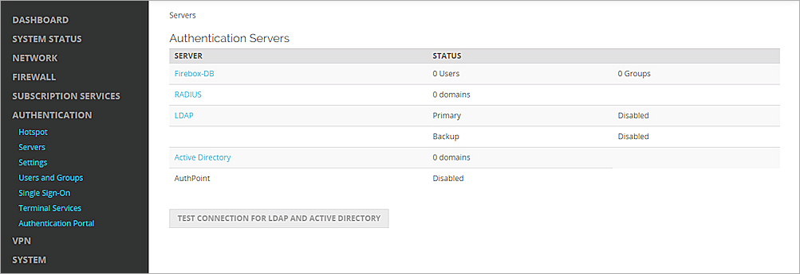
- From the Authentication Servers list, click RADIUS.
The RADIUS page opens. - Click Add.
The Add page opens. - In the Domain Name text box, type the domain name for this RADIUS server. Users must specify this domain name on the user login page. You cannot change the domain name after you save the settings.
- In the Primary Server Settings section, select the Enable RADIUS Server check box.
- In the IP Address text box, type the IP address of the RADIUS server (the Okta RADIUS Server Agent).
- In the Port text box, keep the default port setting of 1812. This is the default port used for communication with the RADIUS server (the Okta RADIUS Server Agent).
- In the Shared Secret and Confirm Secret text boxes, type a shared secret key. This key is used to communicate with the RADIUS server (the Okta RADIUS Server Agent).
- In the Timeout text box, type 60.
- Keep the default value for Group Attribute.
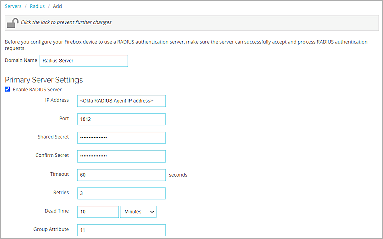
- Click Save.
Configure Mobile VPN with IPSec
- Select VPN > Mobile VPN.
- In the IPSec section, click Configure.
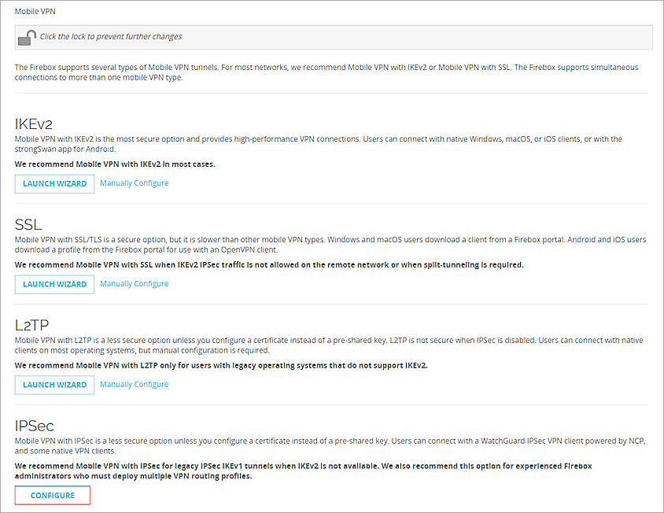
- Click Add to add a new group.
- In the Name text box, type a group name that matches the name of the Okta group or Active Directory group the your users belong to.
- From the Authentication Server drop-down list, select the authentication server that you created. In our example, the server name is Radius-Server.
- In the Passphrase and Confirm text boxes, type a passphrase to encrypt the mobile VPN profile (.wgx file) that you distribute to users in this group. The passphrase can include only standard ASCII characters. If you use a certificate for authentication, this passphrase is also used to encrypt the exported certificate file you send to users.
- In the Primary text box, type the external IP address of the Firebox that the VPN client connects to.
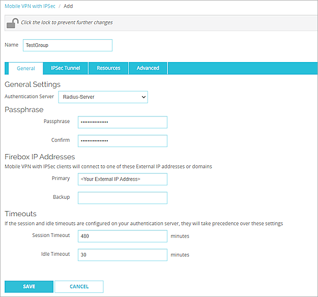
- Select the Resources tab.
- Select the Allow All Traffic Through Tunnel check box.
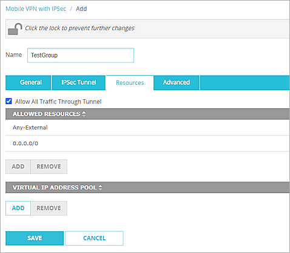
- In the Virtual IP Address Pool section, click Add.
- From the Choose Type drop-down list, select Host Range IPv4.
- In the From and To text boxes, type a range for your virtual IP addresses. The range should be in your interface range. The IP addresses in the virtual IP address pool cannot be used for anything else on your network.
- Click OK.
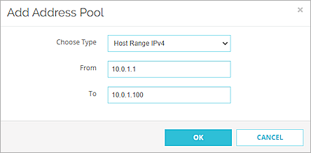
- Click Save.
- In the Groups list, select the group.
- From the Client drop-down list, select WatchGuard Mobile VPN.
- Click Generate and save the <group name>.ini file.
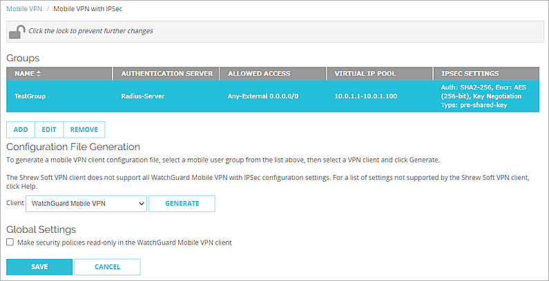
Configure Okta
Configure Multifactor
- Log in to the Okta Admin Console.
- Select Security > Multifactor > Factor Types > Okta Verify.
- Set the status to Active.
- In the Okta Verify Settings section, click Edit.
- Select the Enable Push Notification check box.
- (Optional) Select the Require Touch ID or Face ID for Okta Verify (only on iOS) check box.
- Click Save.
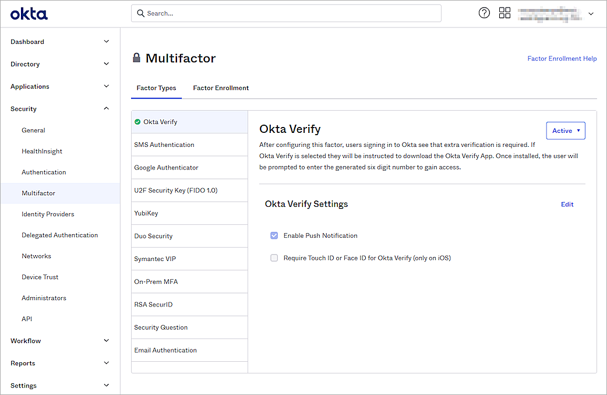
- Select the Factor Enrollment tab.
- Select the Default Policy and click Edit.
- From the Okta Verify drop-down list, select Required.
- Click Update Policy.
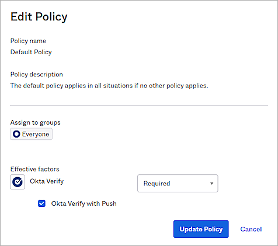
Add an Okta Group and User
- Select Directory > Groups > Add Group.
- In the Name text box, type a group name.
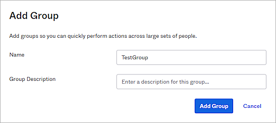
- Click Add Group.
- To add a user in Okta, select Directory > People > Add Person.
You can add your own user information.
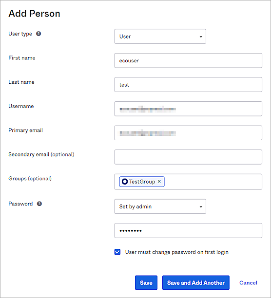
- Click Save.
You can import users and groups from Active Directory to Okta. For information about how to import, see the Okta documentation.
Configure RADIUS Application
- Select Applications > Applications > Browse App Catalog.
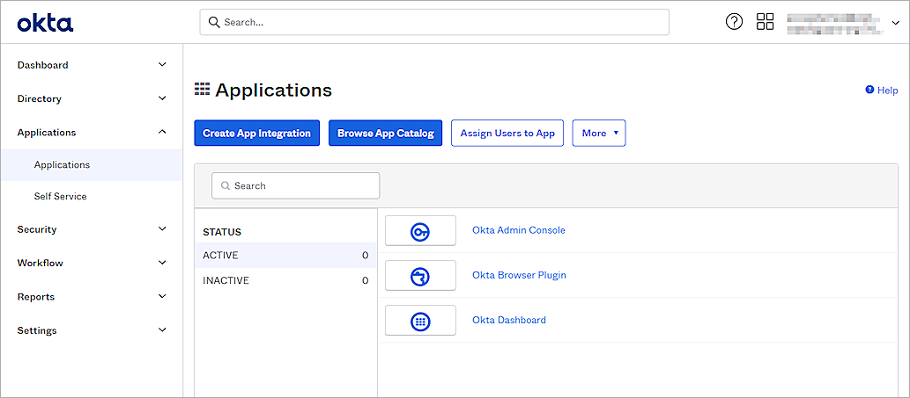
- In the Browse App Integration Catalog section, search for RADIUS Application and click Add.
- In the Application label text box, type a description name.
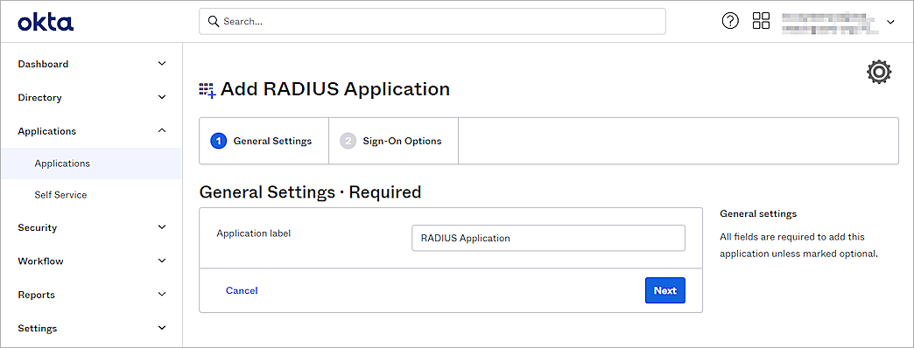
- Click Next.
- In the UDP Port text box, type 1812.
- In the Secret Key text box, type the shared secret key. This is the password that the RADIUS server (the Okta RADIUS Server Agent ) and the RADIUS client (the Firebox) will use to communicate.
- From the Application username format drop-down list, select the appropriate user name format. In our example, we select Email.
- Keep the default values for all other settings.
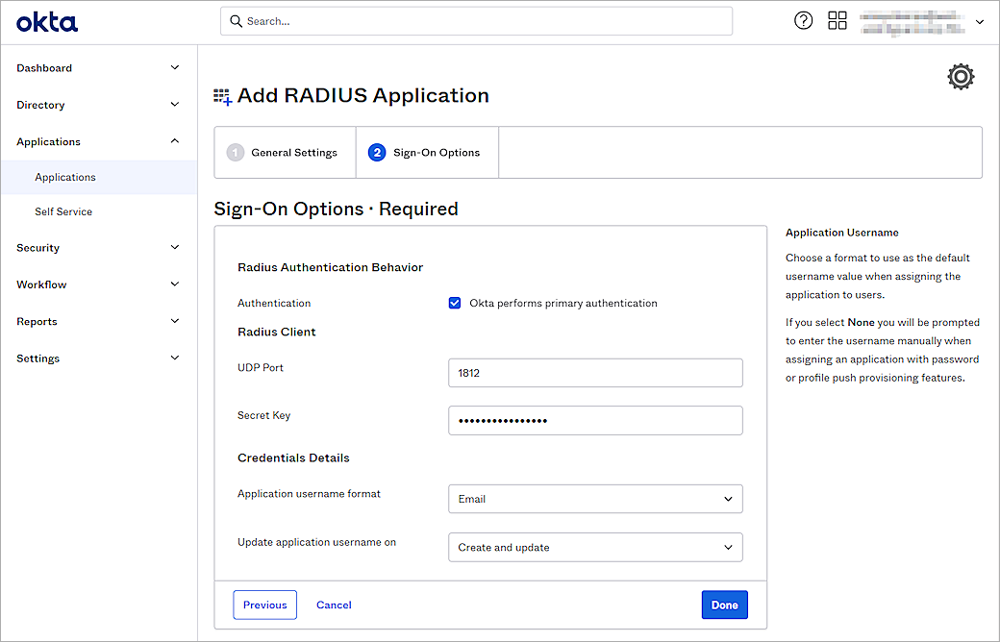
- Click Done.
- Select the Sign On tab.
- In the Advanced RADIUS Settings section, click Edit.
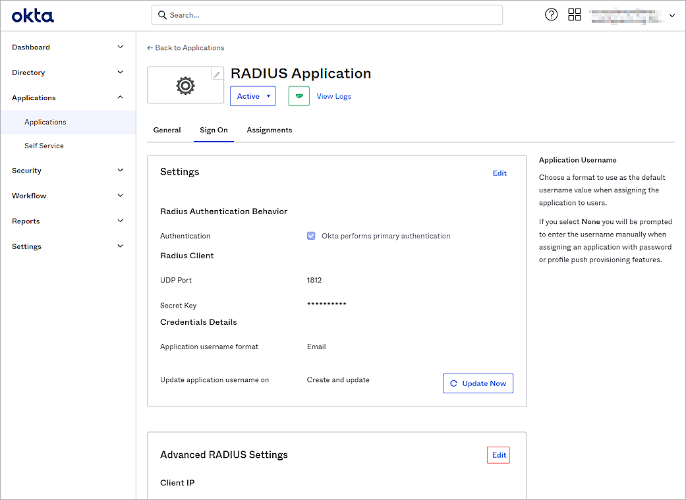
- In the Groups Response section, select the Include groups in RADIUS response check box.
- From the RADIUS attribute drop-down list, select 11 Filter-Id.
- In the Group memberships to return text box, type and select the group.
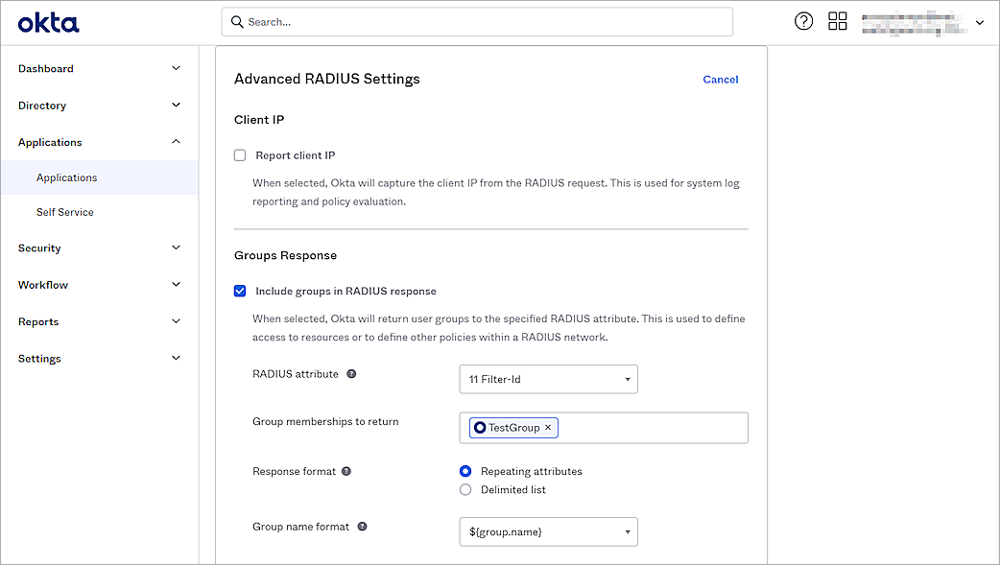
- (Optional) In the Authentication section, select the Accept password and security token in the same login request check box.
- (Optional) Select the Permit Automatic Push for Okta Verify Enrolled Users check box.
- (Optional) Select the Send Access-Challenge for MFA-only logins check box.
- (Optional) Select the Enable UPN or SAM account Name Login check box.
- Keep the default values for all other settings.
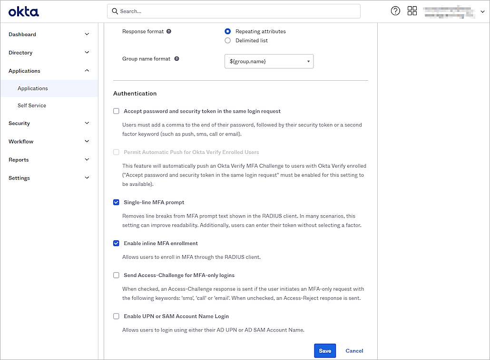
- Click Save.
- Select the Assignments tab.
- Select Assign > Assign to Groups.
If you select to Assign to People, the user must belong to the group you configured in the Groups Response section. - Select the group and click Assign.
- Click Done.
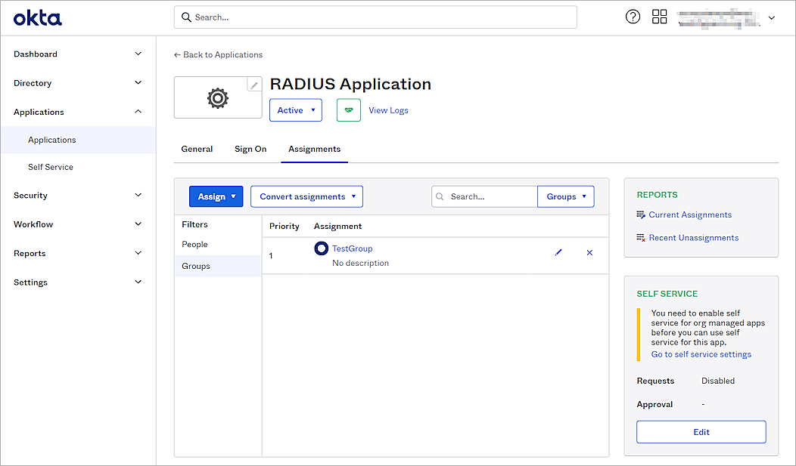
The default RADIUS session timeout sent by the Okta RADIUS agent is 60 seconds, and the VPN connection might be disconnected within two minutes. To solve this problem, you can add the ragent.mfa.timeout.seconds parameter to the Okta RADIUS agent config.properties file. For information about how to configure the parameter, see Configure properties in the Okta documentation.
Test the Integration
To test the integration of Okta and WatchGuard Mobile VPN with IPSec, you authenticate with a mobile token on your mobile device. For RADIUS resources, you can authenticate with a time-based one-time password (TOTP) or a push notification.
To authenticate with push:
- Open your WatchGuard Mobile VPN with IPSec client.
- Select Configuration > Profiles and import the <group name>.ini config file. This is the file you generated at the end of the Configure Mobile VPN with IPSec section.
- Click Add / Import.
- Select Profile Import.
- Click Next.
- Select your file.
- Click Next to finish.
- Select your profile as default.
- Click OK.
- Select Connection > Connect.
- Type your Okta user name and password.
- Click OK.

- Type 1.
- Click OK.
- Approve the authentication request that is sent to your mobile device.
You are connected successfully.

To authenticate with a TOTP:
- Open your WatchGuard Mobile VPN with IPSec client.
- Select Connection > Connect.
- Type your Okta user name and password.
- Click OK.
- Type the passcode shown in the Okta Verify mobile app.
- Click OK.
You are connected successfully.